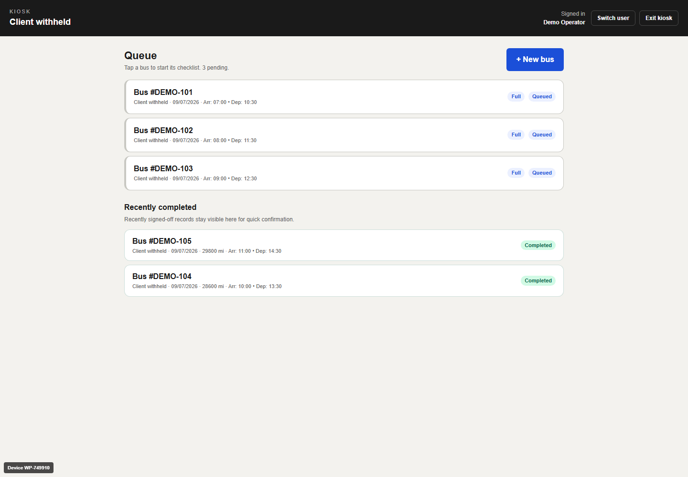
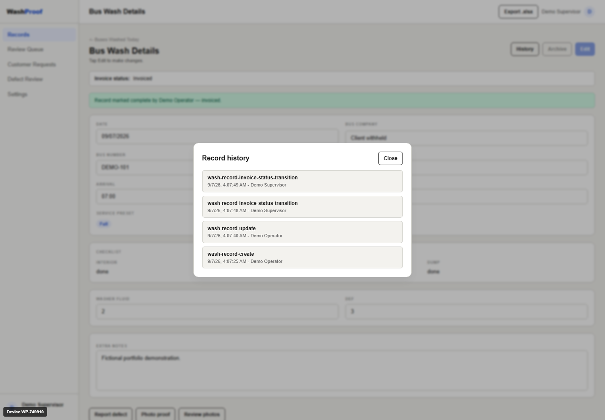

Turned a real need into requirements
I identified the operational gap, proposed the product, and translated the workflow into documented requirements and implementation work.
I saw the limits of paper service logs while working in a bus wash bay. Then I helped build the software to replace them.
WashProof connects the daily work queue, staff sign-off, supervisor review, and billing preparation in one full-stack application.

Shared with the client’s permission. Client identity, branding, staff, fleet data, and operational details are withheld.
On the wash-bay floor, staff need to know which vehicle comes next and which services it needs. In the office, someone needs to know what was completed, by whom, and when, before preparing billing records.
Paper logs connected those two worlds. The opportunity was to capture the record as the work happened, instead of leaving the office to reconstruct it later.
The design question: how do you make sign-off straightforward for the person doing the work, while keeping the resulting record useful to someone reviewing it?
I identified the operational gap, proposed the product, and translated the workflow into documented requirements and implementation work.
My focus was the full-stack structure and the record lifecycle: backend rules, permissions, audit history, concurrent edits, and repeat submissions.
The project includes domain, API, security, and UI tests, plus requirements traceability and deployment documentation to support continued development.
Team credit. This is a two-person project. My collaborator contributed the kiosk/washlist UI and customer-portal flows. The workflow shown here represents the combined product; my primary role is product direction and architecture, with implementation across the stack.
Each step serves a different person, while preserving the same service record.
Follow a queued vehicle into its checklist, mark the requested services done, and confirm sign-off. The completed job returns to the queue’s recent history.
Open the completed record, mark it reviewed and invoiced, inspect its change history, and export the records as a spreadsheet.
A daily queue leads into a touch-oriented checklist for interior, exterior, and other requested services. Staff record mileage and consumables, then sign off. Completion records who finished the work and when.
Review screens bring completed work and record history together. Edits are checked against the user’s permissions and the record’s version, so a stale screen cannot silently overwrite a newer change.
Records move through Unreviewed, Reviewed, Invoiced, and Locked states. Spreadsheet exports support the office’s existing tools, while protected transitions and recorded overrides preserve context.
Both videos show real interactions with the current software, recorded on September 7, 2026 using fictional demo data. Service completion and invoice status are separate concepts: finishing a wash does not automatically mean it has been reviewed or invoiced.


A closer look at boundaries, failure handling, and the tradeoffs behind them.
The React client presents state and validation feedback. The backend enforces business rules. Application contracts and domain models define the boundaries; infrastructure services implement persistence-backed workflows. The main stack is .NET 8, EF Core, PostgreSQL, React, TypeScript, and Tailwind.
The failure: two users load the same record; the second save could erase the first person’s changes.
The implementation: updates carry an expected version. The service checks it, and the database update also checks the original version through an EF Core concurrency token. A losing save becomes an HTTP 409 conflict with a reload instruction.
The tradeoff: optimistic concurrency avoids holding a lock while someone has a form open. It requires the user to reload after a conflict instead of silently merging potentially conflicting service or billing data.
The failure: a repeated request can create a duplicate record or repeat a side effect.
The implementation: record writes accept idempotency keys scoped to the user and operation. A stored response can be replayed for the same key. The record, audit side effects, and replay response are saved within a database transaction.
The tradeoff: disabling a button is useful feedback, but cannot protect the API from retries. Server-side replay storage adds persistence and key-lifecycle responsibilities. This is duplicate protection for supported operations, not a blanket claim of exactly-once delivery.
The failure: a generic editable “status” field makes it easy to bypass review or change a finalized record without context.
The implementation: backend transition rules separate service completion from invoice status. Role checks restrict actions; history captures changes and privileged overrides so the interface can explain how a record reached its current state.
The tradeoff: explicit transitions need more tests than a free-form field, but make allowed and rejected actions reviewable. This supports billing preparation; it is not a full accounting system.
The constraint: the kiosk device and the employee using it have different lifetimes. Signing out a worker should not erase the device’s setup.
The implementation: device context is separate from employee sessions. Employee PINs are hashed; persisted session tokens are hashed too. HttpOnly cookies carry authentication, and server-side idle and absolute expiry boundaries limit session lifetime. Passive polling does not count as user activity.
The tradeoff: explicit sessions support revocation and shared-device workflows, while requiring careful expiry and cross-tab handling. Broader authorization and isolation work remains on the project backlog; these mechanisms alone are not a security certification.
The test strategy checks business behavior and failure boundaries, not just whether a screen renders.
xUnit tests exercise validation, permissions, invoice transitions, audit effects, and repeated idempotency-key replays.
A relational SQLite test uses two independent EF contexts to update the same original record version. It verifies that the losing write raises a concurrency exception and the winning data remains intact.
ASP.NET WebApplicationFactory tests cover HTTP responses and sessions. Vitest, React Testing Library, and MSW cover UI behavior, validation feedback, and API interactions.
Testing limit: many backend tests use EF InMemory; the targeted SQLite test checks relational behavior, but does not replace PostgreSQL integration testing. No unverified coverage percentage or test-pass total is claimed here.
Queue and checklist workflows, attributed completion, review and invoice states, audit history, spreadsheet exports, shared-device sessions, and automated test suites.
Photo-proof, defect reporting, and customer-request flows have implementations. Storage readiness, authorization boundaries, and parts of their test coverage remain active follow-up work. I treat these as ongoing capabilities, not a finished rollout.
What this demonstrates: taking firsthand domain knowledge through requirements, collaborative implementation, data integrity decisions, and verification. The delivered capability is structured, traceable service records; deployment scale, time savings, and financial impact are not asserted.
I’m looking for software development opportunities where I can bring this mix of practical problem-solving, backend thinking, and care for the people using the product.
{kind=link}
{kind=link}